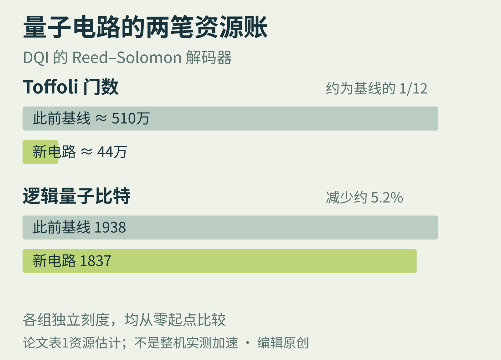

01 / QUANTUM CIRCUITS 近期论文 · 10月15日
量子计算也需要，
精打细算的程序员
节省的是电路资源，离现实中的加速还有几步。

10月16日，Anthropic公布Claude Mythos 5参与量子电路设计的研究：模型提出方案，独立评估器检查正确性并计算资源成本。论文八项任务中，七项相对所列基线同时减少Toffoli门与量子比特，另一项改善二者权衡。
其中，DQI优化算法的Reed–Solomon解码器把Toffoli门数从约510万降到44万，约为原来的十二分之一；逻辑量子比特从1938降到1837。这里的解码器是算法子程序，不能误写成芯片的硬件纠错系统。
两种数字，量的是不同成本
Toffoli是一种可逆逻辑门，门数量可用来衡量这类电路的计算资源；逻辑量子比特衡量电路占用的逻辑空间。两者减少都可能有价值，但都不等同于秒数，也不是实际物理比特总量。
作者描述的改法包括换用适合固定轮次的算法、从当前状态重建历史，以及在指定输入分布和失败预算内压缩历史栈。程序不能随意覆盖中间信息，必须兼顾可逆性与“反计算”清理，这正是经典代码直译可能变昂贵的地方。
论文能说明什么，不能说明什么？
这是预印本的电路资源结果，本刊没有复跑；部分基线为朴素可逆实现。某个子程序的门数降至1/12，不代表整台量子计算机实测提速12倍。硬件、纠错及其他子程序仍影响总成本，允许失败的优化还依赖其分布假设。
编辑判断：可迁移的思路是让“提案”和“验算”分工。先把正确性、资源指标与可接受误差写清，再用外部评估器筛选方案。即使不做量子计算，这也比一句“请优化性能”更像可执行的工程实验。